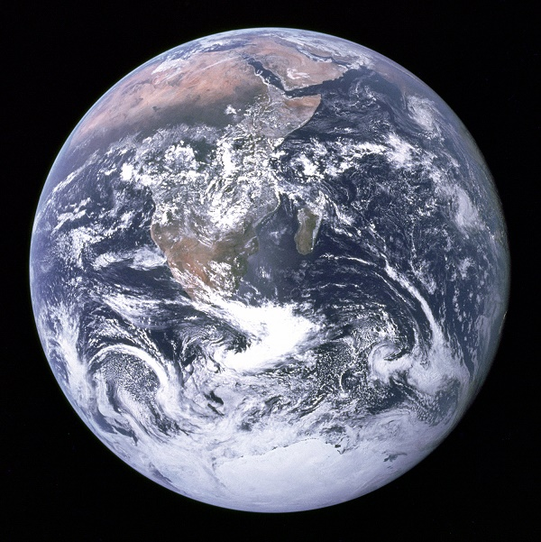
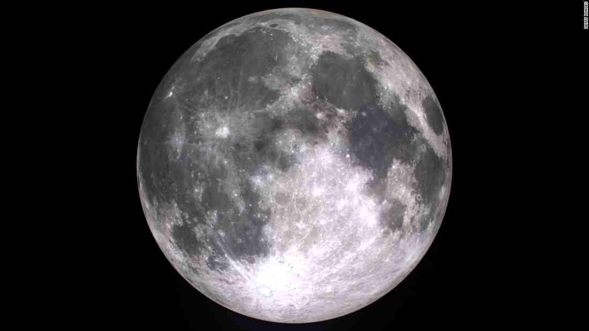

The Earth
Solar System Sun Mercury Venus Earth Mars Jupiter Saturn Uranus Neptune Pluto

Definition

Earth is the third planet from the Sun and largest of the terrestrial planets.
Suprisingly, while it is only the fifth largest planet in terms of size and mass,
it is the densest of all the planets. Earth is the only planet in the solar system
not named after a mythological being. Instead, its name is derived from the old english
word "ertha" and the Anglo-Saxon word "erda" which means ground and soil.
Earth was formed somewhere around 4.54 billion years ago and is currently the only known
planet to support life-and lots of it.
Facts
-The Earth was once believed to be the centre of the universe.
-Earth is the only planet not named for a mythological god or goddess.
-Earth is the most dense planet in the solar system.
-The gravity between the Earth and the Moon causes the tides on Earth.
-The rotation of the Earth is gradually slowing down.
-Earth's atmosphere is composed of 78% nitrogen.
-Earth has a very powerful magnetic field.
-The large amount of oxygen on Earth comes from our plant life's consumption of carbon dioxide. 
-The Earth has an Ozone Layer which protects is from harmful solar radiation.
-70% of the Earth's surface is covered by water.
-The first life on Earth developed in the oceans.
-Earth's water was initially trapped within the planet.
-Earth has relatively few visible impact craters.
-The highest point found on Earth is Mount Everest.
-The lowest point on Earth is called Challenger Deep.
-Earth has one of the most circular orbits of all the eight planets.
-A year on Earth lasts just over 365 days.
-The Earth has a Moon.
Profile
Mass :5,972,190,000,000,000 billion kg
Equitorial Diameter :12,756 km
Polar Diameter :12,714 km
Equitorial Circumference :40,030 km
Known Moons :1
Notable Moons :The Moon
Orbit Distance :149,598,262 km (1 AU)
Orbit Period :365.5 Earth days
Surface Temperature :-88 to 58 degrees Celsius